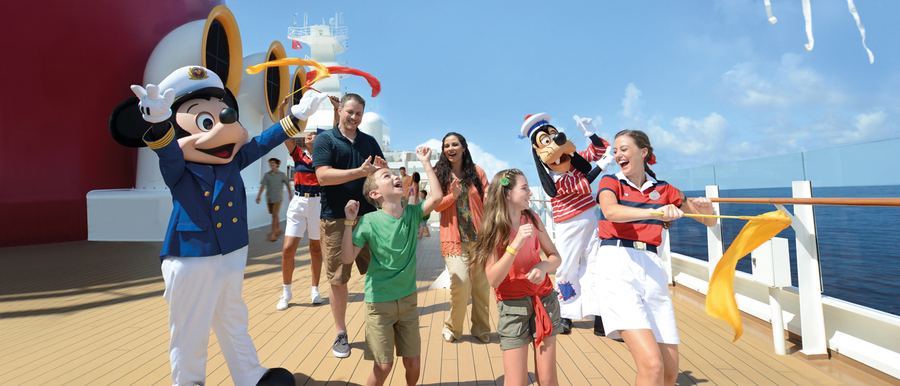
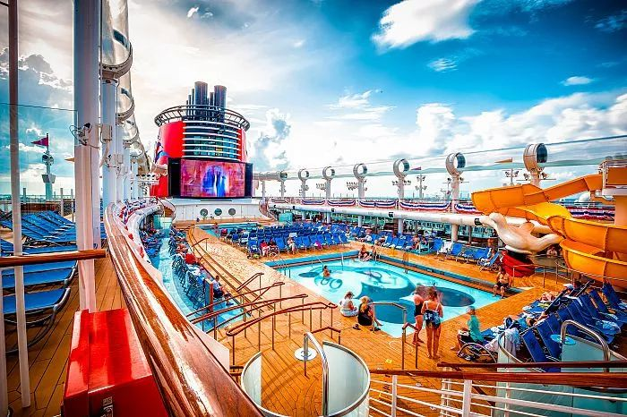
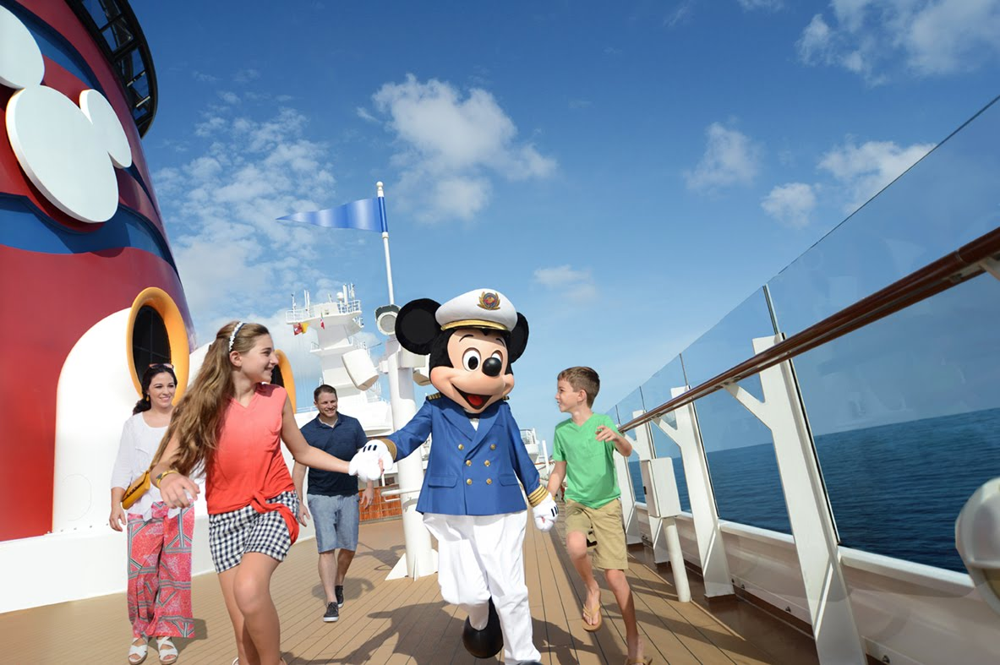
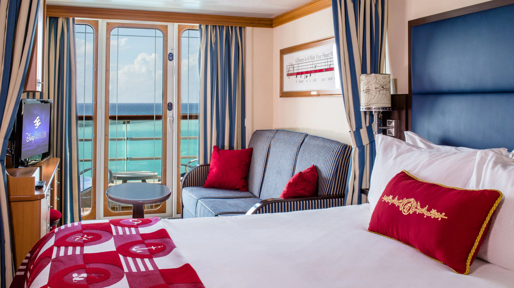

Servicio para familias
Cruceros Disney al Caribe y Bahamas para familias
Diseño itinerarios de Disney Cruise Line con foco en comodidad, experiencia y logística: selección de camarote, documentación, actividades a bordo y escalas clave como Nassau y Castaway Cay.

El viaje en detalle
Itinerario base de 3 noches
Una experiencia Disney completa sobre el agua. Cada escala tiene su magia y su estrategia.

Puerto Cañaveral: embarque con check-in planificado y recomendaciones de horario para evitar esperas y aprovechar las horas a bordo desde el primer momento.
Nassau: escala en la capital de Bahamas con sugerencias de actividades según el perfil familiar: playas privadas, tours acuáticos o exploración de la ciudad.
Castaway Cay: día completo en la isla privada de Disney con playas exclusivas, actividades acuáticas, áreas temáticas para chicos y un ambiente 100% Disney sin salir del destino.
Días de navegación: shows en vivo, encuentros con personajes, piscinas temáticas, spa, entretenimiento nocturno para adultos y actividades para todas las edades.

¿Por qué el crucero Disney es diferente?
All inclusive real: comidas, entretenimiento, actividades y servicio incluidos. Sin sorpresas al final del viaje.
Personajes a bordo: encuentros con Mickey, Minnie, princesas y superhéroes Marvel en un entorno íntimo, muy diferente a los parques.
Shows exclusivos: producciones teatrales de Broadway con temática Disney que no se ven en ningún otro lugar.
Rotational dining: el sistema de restaurantes rotativos asegura que la familia coma siempre en un lugar diferente con la misma calidad de servicio.
Ideal para combinar: el crucero es el cierre perfecto de un viaje a Walt Disney World o Universal Orlando.
Dónde alojarse a bordo
Tipos de camarote
Elegir bien el camarote hace una gran diferencia en la experiencia. Te ayudo a decidir según tu presupuesto y la composición de tu grupo familiar.

Interior
La opción más económica. Sin ventana al exterior pero con el mismo nivel de servicio y acceso a todas las áreas del barco. Ideal para familias que pasan poco tiempo en el camarote.
EconómicoExterior / Porthole
Camarote con ventana o ojo de buey al mar. Aporta luz natural y sensación de espacio. Muy popular entre familias que quieren una experiencia más completa sin llegar al balcón.
ModeradoBalcón / Concierge
La experiencia premium. Balcón privado con vista al mar, más espacio y en el caso de Concierge, acceso a un lounge exclusivo con servicio personalizado y prioridad en reservas.
DeluxeMi asesoría completa
¿Qué incluye el servicio de crucero?
Me encargo de toda la logística para que llegués al puerto sin dudas y con todo resuelto.
Selección de camarote
Interior, exterior o balcón según tu presupuesto, la cantidad de personas y la dinámica familiar.
Documentación y checklist
Control de requisitos migratorios, pasaportes, formularios previos y todo lo que necesitás tener listo antes de embarcar.
Priorización de actividades
Shows, cenas rotativas, encuentros con personajes y excursiones en tierra organizados por horario y prioridad.
Estrategia en Castaway Cay
Qué hacer, en qué orden y cómo aprovechar al máximo el día en la isla privada de Disney.
Combinación con parques
Integración inteligente del crucero con días en Walt Disney World o Universal Orlando para un viaje completo y sin superposiciones.
Soporte pre-viaje
Acompañamiento para dudas, ajustes de último momento y coordinación de toda la logística del viaje.
¿Lista para zarpar?
Tu crucero Disney empieza acá
Contame cuántos viajan, las edades de los chicos y si querés combinarlo con los parques. Yo me encargo del resto.